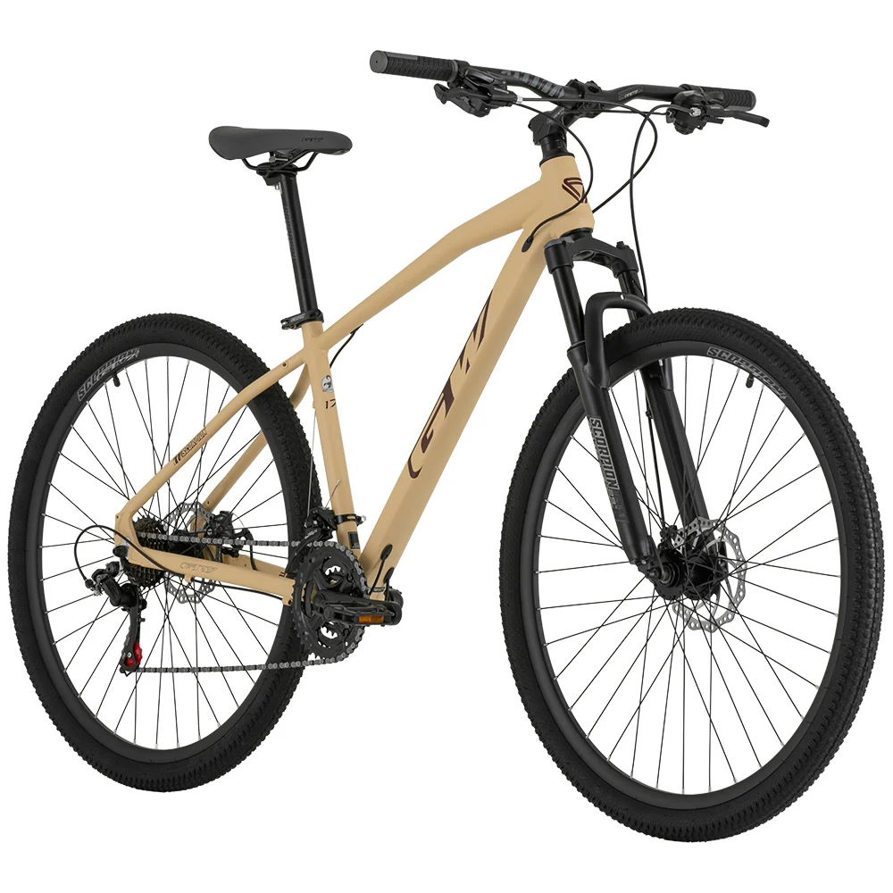

Alquiler de bicicletas
Muévete por la ciudad con total libertad y comodidad
Alquiles de Bicicletas en Medellín: Recorridos guiados y taller especializado.
Conoce mas sobre nuestra comunidad o pasa a ver donde estamos ubicamos.
En Rueda Libre nos apasiona transformar la forma en que recorres la ciudad. Nacimos en Medellín con el propósito de conectar a las personas con el entorno, la naturaleza y la cultura ciclista. Ya sea que busques alquilar una bicicleta para tu día a día, unirte a nuestros recorridos guiados o darle mantenimiento a tu compañera de rutas, aquí encontrarás una comunidad lista para rodar contigo.
Muévete por la ciudad con total libertad y comodidad
Descubre los mejores paisajes y rincones junto a expertos
Mantenimiento especializado para que tu bicicleta nunca se detenga

Ideales para el desplazamiento diario por la ciudad.
Reservar ahoraPotencia y tracción ideal para conquistar cualquier terreno y trocha. Ideales para recorridos mas exgentes.
Reservar ahora
Disfruta de asistencia electrica para recorrer toda la ciudad sin esfuerzo.
Reservar ahora